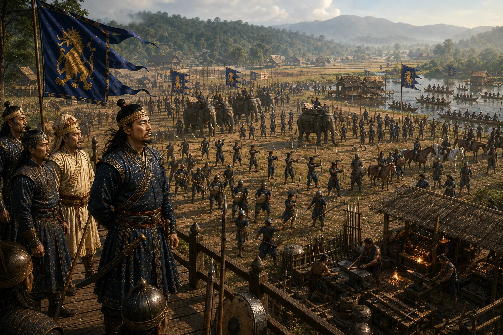

Gadadhar Singha Takes the Throne and Marshals the Army
1681–1682 · The Tungkhungia kings

Overthrowing Lora Raja, Gadadhar Singha mobilizes the kingdom's armed forces to permanently purge Assam of Mughal occupation.
Sources have not yet been catalogued for this record.
People: Gadadhar Singha (Supaatphaa)
Open this scene in the interactive archive · Follow this event on MAP